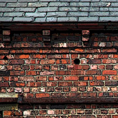
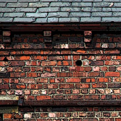
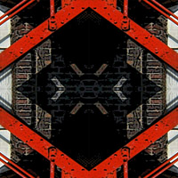
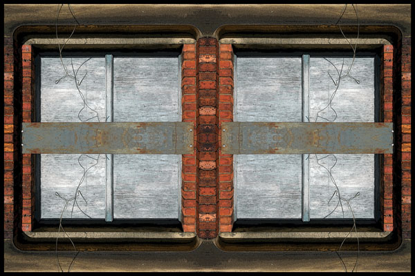

industrial textures
Lead Piping
...detail→
Pollard Street East, Ancoats M40
2006/September
51 cm x 34 cm
Cobbled Street
...detail→
Jutland Street, Piccadilly M1
2006/April
51 cm x 34 cm
Gasometer
...detail→

Briscoe Lane - Alan Turing Way, Philips Park M40
2005/November
51 cm x 34 cm
Concrete Fence
 ...detail→

...detail→

Ancoats, M4
2006/May
51 cm x 34 cm
Sheds
...detail→
Above Lock 77, Rochdale Canal, Newton Heath M40
2006/May
51 cm x 34 cm
Brownsfield Mill
...detail→
Adjacent Lock 83, Rochdale Canal, Ancoats M1
2006/March
51 cm x 34 cm
Rose Mill
...detail→

Coalshaw Green Road, Chadderton OL9
2006/April
51 cm x 34 cm
Gatehouse Window

...detail→
Coalshaw Green Road, Chadderton OL9
2006/April
51 cm x 34 cm
Paint Factory
...detail→
Tenacres Lane - Rochdale Canal, Newton Heath M40
2006/April
51 cm x 34 cm
Wall
...detail→
Brewer Street - Back China Lane, City Centre M1
2006/January
51 cm x 34 cm
Grimshaw Lane End Works
...detail→
Chapter Street, Newton Heath M40
2006/June
51 cm x 34 cm
© T.A.Jessop 2022